The laws of modular arithmetic are among the best weapons
that we have in our arsenal. We, the wannabe computer scientists, frequently
use those laws to keep things manageable. For example if we are to compute the
units digit of
23513714 - 24514732
we would be able to do that in a flash.
However if it requires dealing with equations involving modular arithmetic,
many of us may not feel just as comfortable. Fear not; were not going to daunt
you with a system of gruesome modular equations we would keep it small and
simple.
Given the range of three integers a (
amin aamax),
b (
bminbbmax) and m (
mminmmmax) you are to find the
number of triples (a, b, c) that satisfy the equation:
aamax),
b (
bminbbmax) and m (
mminmmmax) you are to find the
number of triples (a, b, c) that satisfy the equation:
(a + b) modm = (a - b) mod m
Here is a sample.
| 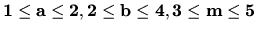 |
| 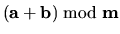 | |  |
| 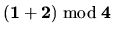 | | 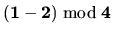 |
| | 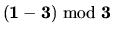 |
| 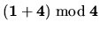 | | 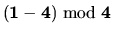 |
| 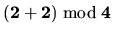 |  | 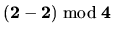 |
| 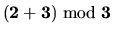 | | 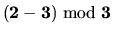 |
| 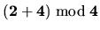 | | 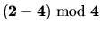 |
| | | |
There can be multiple test cases. The first line of the input
gives you the number of test cases T (
1T20). Each of the next T
line would contain the input for each test case. The input for each test is
given by 3 pairs of integer amin, amax, bmin, bmax and mmin, mmax. You can
assume that,
-
-1000aminamax + 1000
-
-1000bminbmax + 1000
-
+1mminmmax + 1000.
For each of the test case you need to print the serial number of
the test case first. Then on the same line you have to print the number of
triples (a, b, c) that satisfy our modular equation.
3
1 2 2 4 3 5
-100 100 200 350 1 1000
5 9 10 12 2 9
Case 1: 6
Case 2: 318384
Case 3: 45
Miguel Revilla
2004-12-02